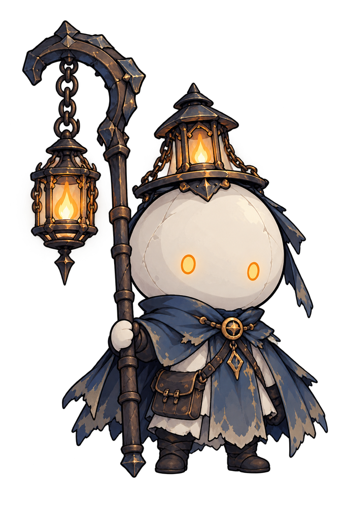
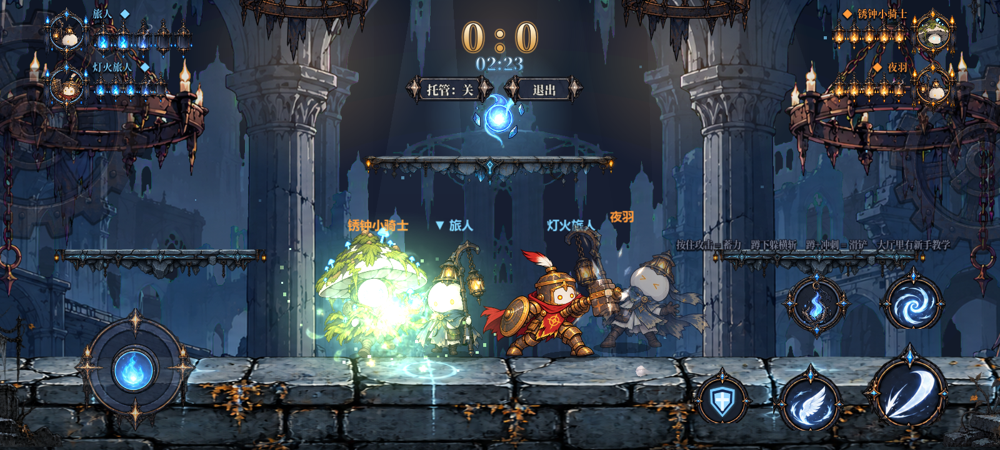
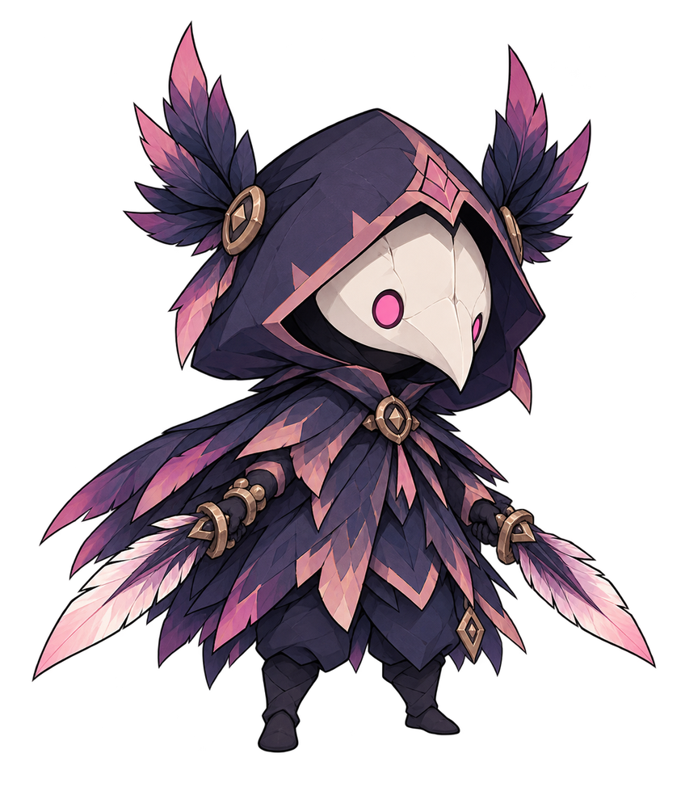
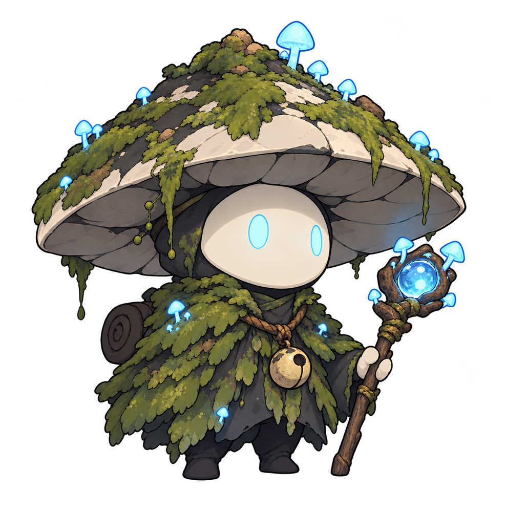

提灯旅人
一盏微光，照亮前路。
2 v 2 横版动作对战
带上你的提灯，踏入残响之庭。

残响之庭
E C H O G A R D E N
首次加载约 104 MB，推荐使用 Wi-Fi
正在点亮提灯…
正在加载游戏资源，请稍候
手机建议横屏游玩。网页版提供单机和机器人对战；局域网联机请使用安卓版。

一盏微光，照亮前路。
以重锤，守住誓言。

掠过暗影，双刃无声。

听见苔生，也听见回响。
BEFORE YOU WANDER
第一次来？进入游戏后，在对战大厅选择
「新手教学」，从移动开始慢慢熟悉。
触屏设备使用游戏内的摇杆和动作按钮。